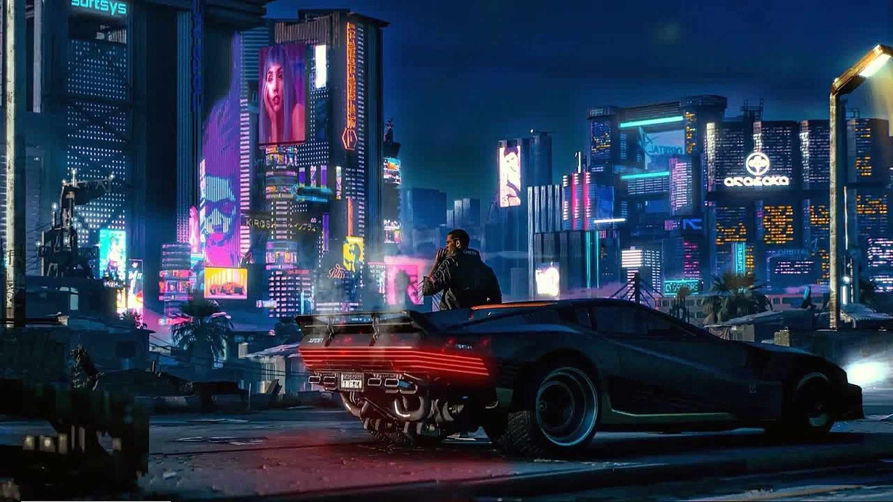

Cyberpunk 2077 es un videojuego desarrollado y publicado por CD Projekt.
La historia sigue la lucha de V mientras lidia con un misterioso implante cibernético que amenaza con sobrescribir su cuerpo con la
personalidad y los recuerdos de una celebridad fallecida que solo V percibe; los dos deben trabajar juntos si hay alguna esperanza de
separarlos y salvar la vida de V.